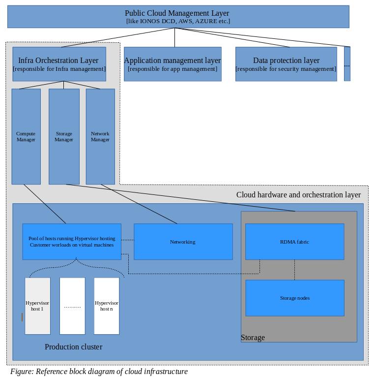
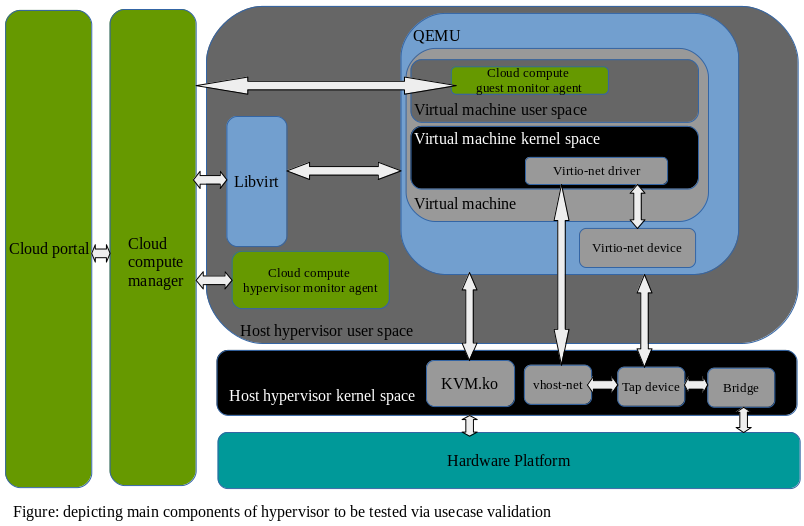

Evaluation of bringing new hypervisor nodes into cloud operation
Srikanth Aithal
Table of contents
1. Problem statement 3
2. Requirement understanding and objectives 3
3. Assumptions 5
4. Hypervisor node validation usecases 6
4.1 Hypervisor usecases 6
4.2 Cloud centric hypervisor validation usecases 9
5. Role of automation 10
6. Execution of hypervisor validation usecases 11
6.1 Hypervisor node preparation 11
6.2 Hypervisor usecase validation 13
6.3 Cloud centric hypervisor usecase validation 14
7. Usecase validation exit criteria 14
1. Problem statement
Generally any cloud provider would be running thousands of virtual machines in the cloud backend layer, based on customer requests, spanning across several physical compute nodes which are in turn connected to other supporting infrastructures such as network and storage.
Infrastructure needs of each customer opting for his business to go on cloud would be different. This calls for a rigorous QA cycle prior to adding any hardware/software into cloud backend infrastructure.
The task here is to write a high level conceptual paper covering the use case to validate new hypervisor nodes to be used in an existing cloud production environment. We must ensure the new compute nodes are production-ready before they are activated for cloud usage. That means compute nodes should be stable, reliable and fulfill any cloud provider SLAs promised to customers.
2. Requirement understanding and objectives
Sample Cloud architecture taken as an example in explaining QA effort is as depicted in the block diagram below. Where in, for simplicity generic cloud provider infrastructure is divided into four layers:
- Public cloud management layer: where the customers login, request and build the infrastructure which suites their requirement. Examples for this layer are public cloud portals like IONOS DCD, AWS, Azure, IBM Cloud etc.
- The Orchestration and management layer: responsible for Infrastructure orchestration, application management, security management etc.
- Infrastructure Orchestration layer: we have provisioning and management verticals for compute, network, storage components respectively which constitutes the cloud hardware platform.
- Cloud hardware layer: hosting server, storage and networking components for the cloud platform.
Note: For the sake of simplicity, the figure below shows only one hypervisor host pool cluster, but in the real environment there could be a number of production clusters.

As per the task, this paper concentrates on coming up with the plan for validating new hypervisor hosts and adding it under the existing hypervisor hosts production cluster. So our concentration would be only on the components highlighted under the gray box.
3. Assumptions
Below are assumptions made:
- New servers have the same HW specs (same model, same vendor) as the existing servers. The CPU on the Hardware provided supports hardware virtualization.
- The Production cluster includes:
- hypervisor nodes, storage servers and networking equipment
- Virtual Machines of customers
- Are connected to the storage servers via a low latency InfiniBand network, being accessed via RDMA.
- Have an OS installed on the host (Ubuntu).
- Were configured and attached to the network
- We maintain our own QEMU and Kernel patches, together with upstream contributions.
- Assuming ‘n’ as number of maximum virtual machines to be hosted on a particular hypervisor host.
- RDMA storage connectivity in place.
- From the networking aspect, assuming that we would be using NAT based connections for the virtual machines on the hypervisor host.
- From a virtual machine disk format perspective, assuming we would use raw format disks which are stored on disks carved out of luns on hypervisor hosts assigned from storage servers via RDMA.
- There are clear interface declarations available for the hypervisor QA team to do integration testing with the upper layer which is the compute manager as shown in above figure. These interfaces are assumed to be libvirt APIs, in this concept paper, which interacts with QEMU on the underlying hypervisor to create/manage/destroy virtual machines.
- SLAs assumed for this exercise:
- High availability : upto 1 host failure in a single production cluster
- Virtual machine startup time: under 10 seconds
- Below features are out of scope as this is concept paper concentrating on new hypervisor node inclusion in a existing production cluster:
- Any kind of application performance testing.
- Any kind of usecase validation of higher level compute management layers in the cloud stack.
- Application high availability usecase validation.
- In detail command references under the execution section.
- In depth Storage/RDMA/Network components validation.
4. Hypervisor node validation usecases
This section would have usecases required to be validated for new hypervisors and to make sure they are ready to be used inside a production cluster under a cloud compute management layer for orchestrating customer workloads.
We can broadly classify usecases into below categories:
- Hypervisor validation usecases
- Cloud specific hypervisor validation usecases
4.1 Hypervisor usecases
This section lists a number of usecases to validate hypervisors and to make sure the builds installed on the host are good from a functionality perspective.
Broadly all KVM virtualization usecases can be classified into below component areas:
- Lifecycle
- CPU
- Memory
- Disk
- Network
- Live Migration
- Dump and FFDC (first failure data capture) validation [RAS]
- Hypervisor stress testing
- Higher cloud management layer hooks/connectivity validation
Main components to be tested, either implicitly or explicitly, via usecases validation are:
- Host hypervisor kernel space, which contains below sub components:
- KVM.ko module as well as other kernel modules with which kvm.ko interacts with.
- vhost-net module
- Bridge and tap devices
- Host hypervisor user space, which contains below sub components:
- QEMU itself which inturn contains virtio backend queues necessary for virtio-net operations
- Libvirt: Covering libvirt usecases also helps in covering the integration testing if the upper cloud compute management layer in the cloud stack uses libvirt APIs to manage the KVM hypervisor nodes.
- Higher cloud stack monitoring agents: to communicate with the cloud compute management layer higher in the cloud stack. They would be validated for connectivity and API interactions with the hypervisor node.
- Guest OS kernel space, which contains below sub components:
- this is the kernel inside the virtual machine. Many guest virtual machine IO and hotplug/unplug operations exercise the kernel inside the guest
- Guest virtio driver: necessary for guest IO operations either via vhost-net or virtio-net
- Any agents, to communicate with the cloud compute management layer higher in the cloud stack. They would be validated for connectivity and API interactions with the guest OS userspace.

Below we list the usecases to be validated under each of the component areas:
- Lifecycle
- The testcases here should be covering usecases such as: vm import, vm start, vm restart, vm snapshot/restore, vm suspend/resume, vm save/restore, vm edit, vm stats. Basically we should be covering all virtual machine (vm) lifecycle related usecases in this vertical.
- CPU
- Testcases under this vertical should be covering all CPU (vCPU) related features. Such as vcpu-host cpu affinity (pinning), emulator pinning, limit testing with respect to vcpus in other words assigning max vcpus to a virtual machine and performing all lifecycle activities, numa tuning, cpu hotplug/unplug, cpu pinning with huge page pinning to be done in parallel, lifecycle tests to be running along with cpu hotplug/unplug in different sequence and combinations.
- Memory
- Testcases under this vertical should be covering all memory related features. Such as numa tuning, memory hotplug/unplug along with other lifecycle tests, with and without hugepages testing along with lifecycle testing, THP tests.
- Disk
- Testcases under this vertical should be covering all disk related activities to be performed on the virtual machine. Such as storage pool lifecycle tests on hypervisor host, volume creation, disk hotplug/unplug to a vm along with lifecycle tests, volume resizing, volume cloning. IOThreading along with different cache modes should be functionally tested.
- Network
- Testcases under this vertical should be covering all network related activities to be performed on the virtual machine as well as on hypervisor host using virtio-net as well as vhost-net. Such as creation of network pools on host, updation/deletion of network pools, network interface hotplug/unplug to a vm along with vm lifecycle operations. Network bonding usecases to be tested with different possible topology of interface assignment.
- Live migration
- This is a very important functional usecase to support critical SLAs to customers. We assume to have 2 hosts with the same configuration and same storage source, to carry on this functional testing. With two hypervisor hosts configured to use the same storage pool, we need to run testcases covering basic migration from source to target host, as well back and forth.
- We as well need to validate usecases of migration where vm undergoes various combinations of operations involving hotplug/unplug of resources such as CPU – Memory. This would validate DRC state migration.
- Validate usecase of migration of Vms which uses hugepages, numa pinning, hugepage pinning, cpu pinning.
- In all above migration scenarios, virtual machines should be migrated source to destination and back to source. Repeating this back and forth migration a number of times [atleast 10-15] would help uncover any critical race condition issues in the kernel code.
- Dump and FFDC validation
- Last category of usecases but not least, we need to make sure incase of any issues we should be able to get all necessary information such as kernel dump, messages, host configuration such as cpu, memory, network, disk configuration etc. which can be used for debugging issues. RAS plays a major role, from virtualization usecase perspective if any virtual machines crash we should be able to collect dump and virtual machine configuration for postmortem of the issue later.
- Dumps in KVM can be collected at two levels:
- Inside the virtual machine:
- kdump utilities should be installed and set active on virtual machine.
- Dummy crash can be triggered, following which virtual machine reboots, later verify if we get vmcore generated under `/var/crash` [default folder but can be changed by editing dump location under kdump.config file]
- Test libvirt dump feature to get virtual machine crash dump including memory dump.
- Validate the dump contents using crash utility, ensuring the dump format is intact.
- Run and validate system diagnostic collection tools like sosreport and apport which are used to collect system logs, system configuration, and diagnostic information. Goal of this usecase is to make sure these diagnostic tools run successfully with the versions of kernel, qemu which we have on hypervisor host and collect valid system details. This usecase is very critical since it plays a major role in determining and expediting fixing of issues in the production environment.
- Hypervisor stress testing
- Goal of this section is to stress hypervisor nodes to uncover any critical bugs affecting the host running state. This usecase is very helpful in detecting guest kernel and host kernel interaction issues across memory, CPU scheduling areas.
- Run a couple of virtual machines which exhausts 90% of available CPU, memory resources on the hypervisor nodes, in parallel run CPU and memory stresser on hypervisor node. Let this test run for a long time [72-96 hours]. At the end of the usecase run, hypervisor and virtual machines should be in up and running without any issues.
- Repeat step (b) with having numa pinning, cpu tuning and IOThreading in place for virtual machines.
- Repeat step (b) by having few idle virtual machines alongside a couple of virtual machines which are stressing CPU, Memory components.
- Higher management layer hooks/connectivity validation
- Goal of this usecase is to validate APIs and connectivity through which the higher management layer on cloud stack interacts with the hypervisor nodes. Higher management layer validation itself is not in the scope though.
- Validate negative usecases by supplying erroneous data to the APIs and observe the hypervisor node behaviour. None of the negative usecases should cause hypervisor nodes to behave abnormally.
Above categories covers major areas of hypervisor usecases, we would be moving onto cloud centric usecases in the below section.
4.2 Cloud centric hypervisor validation usecases
In this section, we list cloud usecases which are different from functionality usecases but in turn uses many of the functionality usecases for validating hypervisor from a cloud usecase aspects. Cloud centric usecases can be broadly outlined as below:
- Stress and Longevity usecase:
- Goal of this usecase is to validate the reliability and availability aspect of workloads hosted in the cloud environment.
- Run ‘n’ virtual machines on each of hypervisor nodes, where we load a mix of CPU, Memory and IO bound workloads on subsets of ‘n’ virtual machines running for a defined period of time [usually 72 to 96 hours in a stretch]. At the end of the run we validate the state of all virtual machines to make sure they are active with no errors. We can load virtual machines with opensource stress tools such as LTP, FIO, stress-ng, iobench etc.
- We would test maximum and minimum resources [can be cpu/memory/IO] assignments for single virtual machines as well as ‘n’ virtual machines at a time. The limit testing would be carried out in combination with virtual machine lifecycle, resources hotplug/unplug and live migration usecases explained in the above section. Goal is to make sure different cloud provisioning patterns work well with all of the hypervisor usecases listed in the above section.
- Execute virtual machine lifecycle tests for a number of times [say 1000 times]. This would help testing the reliability of virtual machine lifecycle operations which are usually done in a random fashion by customers via cloud portal.
- The Cloud Infrastructure SLA compliance validation:
- Repeating below SLAs which I have assumed for this exercise:
- High availability : upto 1 host failure in a single production cluster
- This aspect would be tested using a set of Live migration usecases mentioned in the above section. Goal is to ensure withstanding 1 host failure in a production cluster by live migrating virtual machines on the host which has predictive failure alert to other hosts in the cluster.
- Virtual machine startup time: under 10 seconds
- For instance, if virtual machine startup time is more than 10 seconds, then it qualifies to be a bug even though functionality does not have an issue.
Automation plays a very critical role in running these hypervisor and cloud centric usecases validation cycle.
5. Role of automation
For sure running all usecases against different patterns as mentioned in above sections is a manually impossible task. This is where the power of automation comes into picture.
Advantages of ‘Test by automation’ include faster feedback time on builds to the development team, agile way of delivering test builds to beta customers, shorter delivery cycle and more productive usage of time.
Reusing and building on top of existing proven automation frameworks gives us a lot of flexibility and time to innovate in developing new automated usecases instead of reinventing automation framework all over again. There exist few opensource virtualization test frameworks for this purpose, among them the virtualization automation framework `avocado-vt` stands out for its simplicity, existing coverage and active opensource contribution rate. Its main purpose is to serve as an automated regression testing tool for virt developers, and for doing regular automated testing of virt technologies.
Automated test runs lets us spend time in below activities in parallel to the effort of qualifying new hypervisor nodes into production cluster:
- Identifying automatable testcases which can be added into our hypervisor usecase bucket. This is a continuous test bucket enhancement exercise resulting from new learnings, field feedback etc.
- Interlocking with the development team on understanding any upcoming new cloud features which needs the support of the underlying hypervisor.
- Automation feasibility study of new hypervisor virtualization features and contributing to upstream the automated testcases.
In short, ‘Test driven development’ can only be achieved via ‘Test by only automation’.
6. Execution of hypervisor validation usecases
This section outlines the high level execution flow of hypervisor validation. The activity can be broadly divided into 3 phases namely:
- Hypervisor node preparation
- Hypervisor usecases validation
- Cloud centric usecases validation
6.1 Hypervisor node preparation
In this phase, we will be preparing/configuring new hypervisor nodes to run virtualization usecases:
- As the first step we validate pre installed kernel level on Ubuntu OS Installation. If the internal development team has a customized kernel, git clone the kernel source → compile → install on the host → update grub → reboot into right kernel level.
- Now ensure we install all required supporting packages.
- In-case we are using custom qemu given by our internal development team, we need to git clone the qemu source → configure and compile source code → using checkinstall install the custom qemu binaries onto required path or it can be manually as well.
- Ensure right versions of any other userspace utility packages are installed (like Openssh etc.)
- If resource[cpu, memory,disk,network] hotplug to virtual machines is a feature which is offered to customers via cloud portal, we need to ensure below kernel modules are loaded on hypervisor host
- acpiphp, pci_hotplug
- Hypervisor host kernel must have been compiled with below config params in .config file:
CONFIG_HOTPLUG=y
CONFIG_ACPI_HOTPLUG_CPU=y
CONFIG_HOTPLUG_PCI=y
CONFIG_MEMORY_HOTPLUG=y
- If required, create users other than root: create and add users to group `libvirtd`. We need to relogin as this user so that user becomes an effective member of libvirtd group.
- Verify installation:
- Run command `virsh list –all` would return result similar to below
$ virsh list --all
Id Name State
----------------------------------
$
- Make sure we have the default NAT based connectivity which can be used for the virtual machines aka ‘default virtual network’. For this concept paper have assumed default network, in cloud infrastructure we could have custom network configuration in which case we have to create respective virt-net topology on the hypervisor host.
example:
$ virsh net-list --all
Name State Autostart
-----------------------------------------
default active yes
If it is missing, then the example XML config can be reloaded & activated
$ virsh net-define /usr/share/libvirt/networks/default.xml
Network default defined from /usr/share/libvirt/networks/default.xml
$ virsh net-autostart default
Network default marked as autostarted
$ virsh net-start default
Network default started
- Prepare a disk image which can be used as master image by virtual machines on the hypervisor nodes.
- We would prepare a master image which we call it as ‘golden image’ and then use `virt-clone` to clone that golden image for use with a virtual machine as per need.
Golden image preparation high level steps:
- Use `qemu-img` to create raw disk on the volumes carved out from storage servers via RDMA.
- Use libvirt to create a domain with above `raw` format disk and default network connection.
- Start the domain, do network based installation of the required guest OS [we assume Ubuntu in this case].
- After OS installation on the virtual machine, install a custom kernal for the guest virtual machine, if required. Later install all required guest packages.
- After customizing the virtual machine(vm), shutdown the vm gracefully.
- Using the `virt-sysprep` tool, unconfigure the virtual machine so that clones can be made from the disk it uses. If we are skipping this step we would run into duplicate ssh keys, mac configuration, duplicate machine-id issues when we clone this guest.
virt-sysprep -a -d <domainname>
- Now we have a master virtual machine template, which we can clone and use for test cases covering scalability tests, limit testing, performance tests etc. where we require a large number of virtual machines. This saves us a lot of time.
- Install and configure required monitoring/management daemons on hypervisor nodes required to communicate with upper compute management layer in the cloud stack.
Now we have a hypervisor host which is ready to be used for virtualization usecase validation. As well we have a golden image for use with our virtual machines. It's time to get into the Hypervisor usecase validation phase.
6.2 Hypervisor usecase validation
Now that we have all the usecase scenarios and have prepared the hypervisor environment, we would need to move into the execution phase.
In this phase usecases mentioned under all categories in section Hypervisor usecases would be run against each of the below configuration:
- Hypervisor host running a single virtual machine which is assigned with all the resources on that host node.
- Hypervisor host running maximum supported virtual machines ‘n’ of which all vms get equal share of resources on the host. This configuration is very much required to validate usecase of scalability which is very important factor for any cloud provider.
- Hypervisor host running virtual machine with different cloud resource provisioning patterns available on the cloud[DCD] portal.
In the process of above use cases validation any issues would be reported as bugs under bugzilla. Severity of the bugs depend on the seriousness of the issue found. Any show stoppers like host hangs, reboots, guest panic would be ‘Critical’ issues whereas issues like incorrect description of guest property heading, missing error messages would be considered ‘Minor’ issues.
We would be moving ahead with the next validation phase only if there are no ‘Critical’ bugs pending and we have attempted 100% of the given usecases.
6.3 Cloud centric hypervisor usecase validation
From the previous phase we know that individual hypervisor node functionality is now stable, the pending part of the validation process is to make sure cloud centric usecases do not break any pieces on hypervisor nodes.
All of the usecases mentioned in Cloud centric usecases would be executed on hypervisor nodes. This phase is very critical in which we would uncover critical bugs related to memory mapping, softlockup/hardlockups in the kernel code, underlying hardware freeze, timing issues and so forth.
Any bugs resulting in this phase would only be considered ‘Critical’ severity whose fixes if delayed could hold up the customer release date. This is when there should be a very tight feedback loop between QA and development team, intermediate fixes given by development team should be patched on top of existing kernel/QEMU [wherever fix is suppose to be] and results should be shared with development asap, cycle to be repeated until there is a fix for the uncovered bug.
7. Usecase validation exit criteria
In the end, below are the two main criteria which should be met for us to qualify new hypervisor nodes to be included as compute nodes in a cloud production cluster:
- Hypervisor usecases should be 100% attempted.
- There should be no critical/major issues/bugs pending to be resolved.
- For minor bugs found we should be having future release fix targets.
- Cloud specific usecases should be 100% attempted.
- There should be no pending issues/bugs in this area.